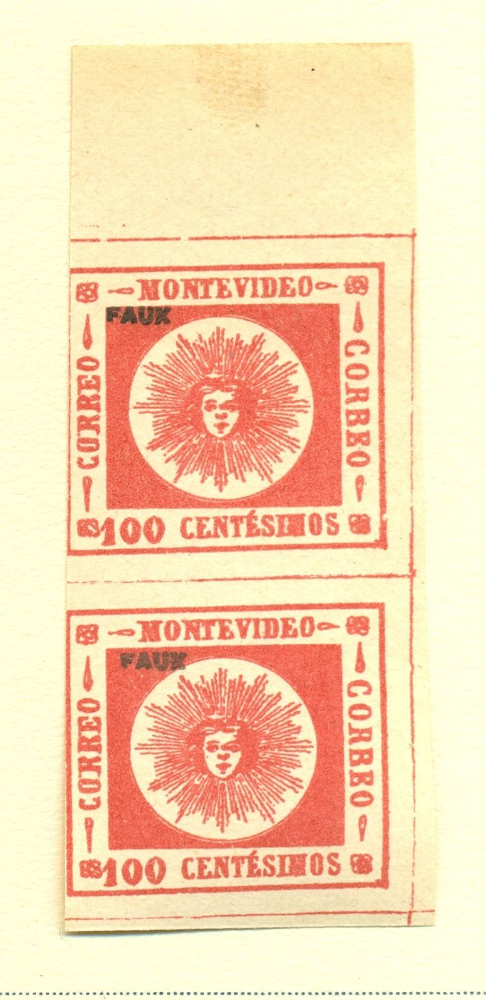
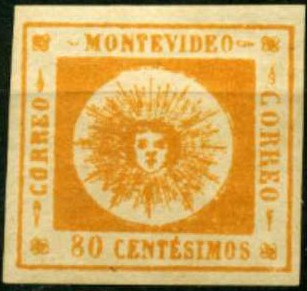

Fournier forgery?
Return To Catalogue - Uruguay 1859-60 'Sun' issue
Note: on my website many of the
pictures can not be seen! They are of course present in the
catalogue;
contact me if you want to purchase it.
Uruguay 1859-60 'Sun' issue, genuine stamps and other forgeries.
I've been told that the next stamp is a Fournier forgery (though it does not resemble the forgeries given in 'The Fournier Album of Philatelic Forgeries':
Fournier forgery?
Other forgeries that were made by the forger Fournier:

First choice Fournier forgeries. The 180 c has no ornament in
front of the word 'MONTEVIDEO'



Forgeries from the Fournier Album, note the different shades of
red in the 100 c value.

A whole sheet of Fournier forgeries of the 100 c value as found
in the Fournier Album of Philatelic Forgeries, different from the
above shown forgeries (thin numerals).

(I've been told that these two stamps are also Fournier
forgeries)

Same 80 c forgery as shown above, but with cancel 'ADMon DE... 5
MAR 59 MONTEVIDEO', this cancel does not appear in 'The Fournier
Album of Philatelic Forgeries'
Some Fournier forgeries with the 'ADMINon DE CORREOS NOVbre 15 1862 MONTEVIDEO' cancel:

Forged Fournier cancels: "ADM. DE CORREOS DOLORES REP.OR DEL
- URUG." (I believe the genuine cancel has 'O-' instead of
'OR') and "ADMINon DE CORREOS NOVbre 15 1862
MONTEVIDEO"

Forgery with the 'Dolores' cancel.

Another forgery with the 'Dolores' cancel; most likely made by
Fournier as well.

A genuine Dolores cancel for comparison

{kind=link}
{kind=link}
{kind=link}